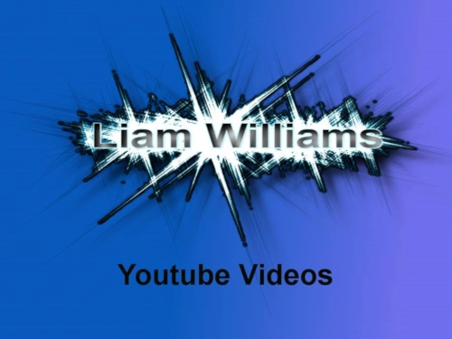
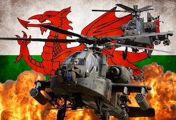
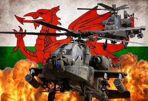
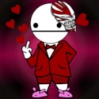
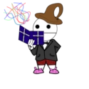
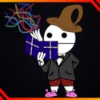
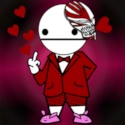
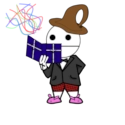
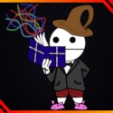
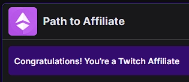

First Appearance
This was the very first profile picture I ever used across the internet. It wasn’t the best, but it was simple and affordable. I actually bought it from a schoolmate for £5 when I was in Year 7. Back then, everyone was diving into YouTube and streaming, so it didn’t seem like a big deal at the time. However, having my name as my profile picture turned out to be not the greatest idea.
Trying Again


 

 





Each of these profile pictures had their moments some questionable, some iconic, but all part of the journey! They kept me motivated to refine my style and improve, even if some of them look like they belong in a ‘what was I thinking?’ museum.
The Raid
As chaos unfolded in the world, I was deep into one of my many Halo: MCC streams, gaming alongside my best friend. Then, out of nowhere, an unexpected raid swept in and turning a regular session into a milestone that kickstarted my streaming journey.
Huge thanks to LootlessGamers for the unforgettable raid! Even now, it remains a milestone in my streaming journey, and I’ll always appreciate it. Check them out and show them some love: LootlessGamers' Twitch
Goal to Affiliate
After the raid, my follower count started rising faster than I could have imagined. Every day brought more growth, and then just a few days later it happened. I hit Affiliate! It was a huge milestone, marking the next step in my streaming journey.
Commission
As my channel grew and more followers joined in, I knew it was time for a profile picture upgrade. At the time, I was deep into GTA Online, so I had a clear vision, I just needed the right artist to bring it to life. That’s when I reached out to Remshia for a commission, after being introduced following my affiliate milestone.
And wow, they absolutely delivered!